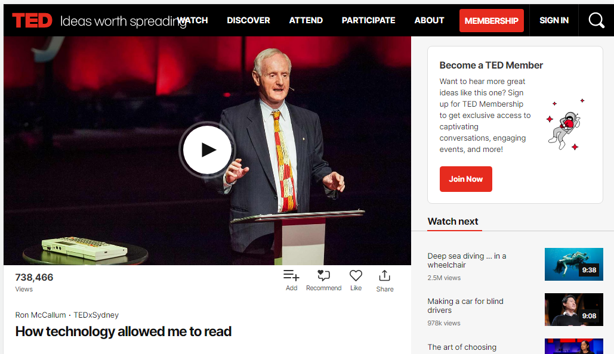
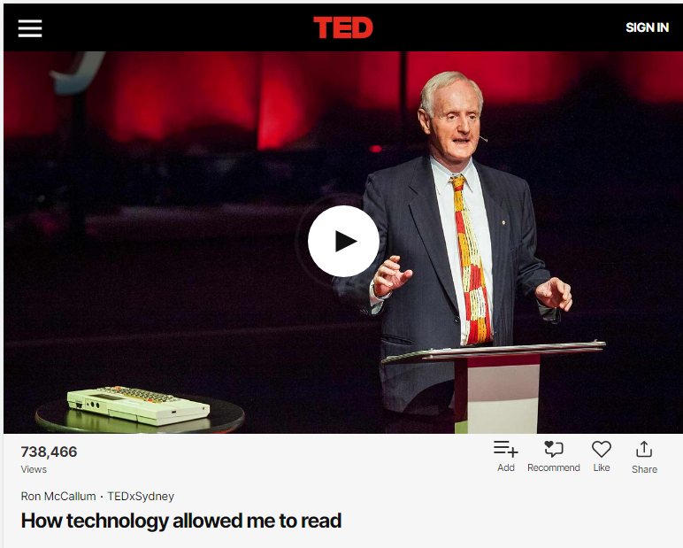
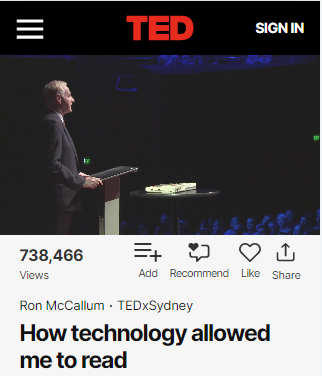

Assurez-vous que les vidéos sont redimensionnées à mesure que la taille de la zone d’affichage change afin qu’elles ne débordent pas. Vous pouvez y parvenir soit en:
max-width:100% sur l’élément du conteneur de la vidéo, ou enwidth: 100% sur l’élément videoLes dimensionnements statiques peuvent briser les configurations de la page.
Dans cet exemple, la vidéo utilise la CSS width:100% et est redimensionnée dans tous les modes. Pour voir la conception adaptée en action, consultez le TED Talk Ron McCallum : How technology allowed me to read et redimensionnez la fenêtre de votre navigateur.
L'exemple commence

L'exemple finit
L'exemple commence

L'exemple finit
L'exemple commence

L'exemple finit